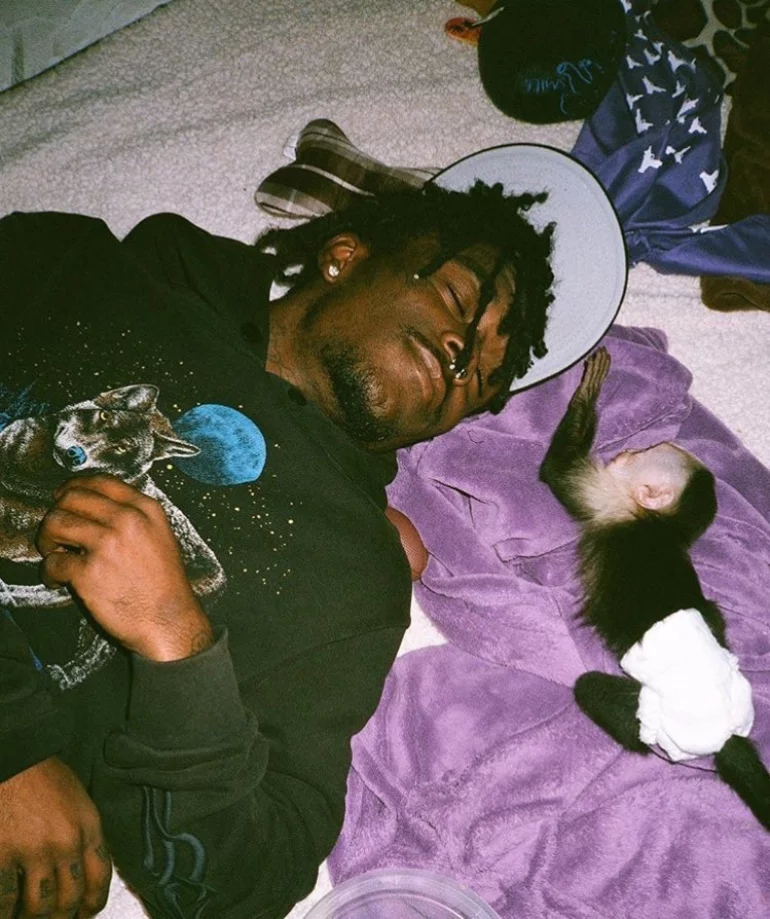

Về Hiphop
Được tiếp xúc với văn hoá Hiphop lần đầu vào năm lớp 7, khi nghe battle no-beat của Phúc Du vs Đại Vũ. Mình nghe được hiphop trong nước và rap nước ngoài, đặc biệt thích Wxrdie, 24k. Right, Central Cee, J Cole, 21 Savage. Dưới đây là một số bài Hiphop yêu thích của mình.